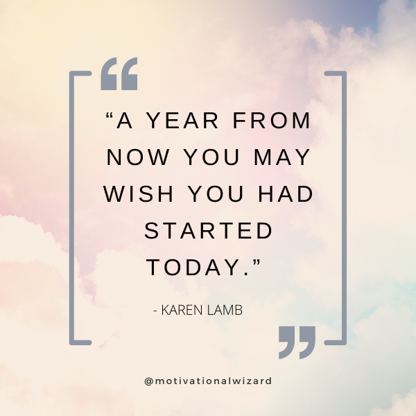

My Quotes
Life Motivational Quotes
This quote by Karen Lamb is a reminder that the best time to start something important in your life is now. Whether it’s a personal project, a career goal, or a self-improvement journey, starting today means you can look back a year from now and see how much progress you've made. Don’t wait for the "perfect" moment; every day is an opportunity to move forward.